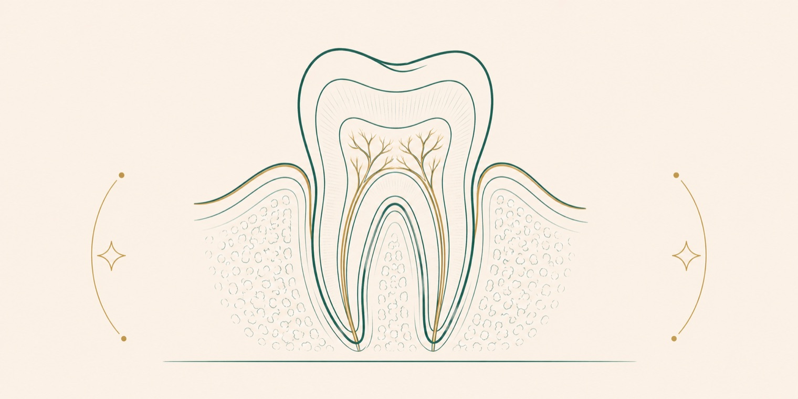

Endodonti, dişin iç dokusunu (pulpa) ilgilendiren hastalıkların tedavisiyle ilgilenen daldır. Kanal tedavisi, iltihaplanmış veya enfekte olmuş diş özünün temizlenerek dişin ağızda korunmasını sağlayan işlemdir. Amacı, çekilmesi gerekebilecek bir dişi kurtarmaktır.
Kanal tedavisi ne zaman gerekir?
Derin çürük, tekrarlayan işlemler veya diş travması, dişin iç dokusundaki pulpanın iltihaplanmasına ya da enfekte olmasına yol açabilir. Bu durumda kendiliğinden geçmeyen ağrı, sıcak-soğuk hassasiyeti ve şişlik görülebilir. Kanal tedavisi, bu dokunun temizlenerek dişin işlevini sürdürmesini sağlar.
İşlem nasıl yapılır?
İşlem lokal anestezi altında yapılır ve genellikle dolgu yaptırmaya benzer bir konforla tamamlanır [1].
Anestezi
İşlem bölgesi lokal anesteziyle uyuşturulur.
Temizleme
İltihaplı veya enfekte diş özü (pulpa) uzaklaştırılır.
Şekillendirme ve dezenfeksiyon
Kanal sistemi şekillendirilir ve dezenfekte edilir.
Doldurma
Kanallar uygun bir dolgu malzemesiyle kapatılır.
Kanal tedavisi sonrası dişin korunması
Kanal tedavisi görmüş dişler, madde kaybına bağlı olarak daha kırılgan olabilir. Bu nedenle çoğu durumda dişin bir kron ile desteklenmesi önerilir. Bu yaklaşım, dişin uzun dönemde ağızda kalma şansını artırır.
Başarı ve dişin ömrü
İyi yapılan kanal tedavisiyle diş uzun yıllar ağızda kalabilir. Bilimsel çalışmalar, kanal tedavisi görmüş dişlerde yüksek yerinde kalma oranları bildirmektedir [1]. Doğal dişin korunması, çoğu durumda çekim ve sonrasında protez yapımına tercih edilen bir seçenektir.
Sık sorulan sorular
Kanal tedavisi ağrılı mıdır?
İşlem lokal anestezi altında yapılır ve sırasında ağrı beklenmez. Aksine, kanal tedavisi çoğu zaman mevcut diş ağrısını gideren işlemdir. Sonrasında birkaç gün sürebilen hafif hassasiyet olağandır.
Kanal tedavisi yerine diş çekilse olmaz mı?
Doğal dişin korunması genellikle önceliklidir; hiçbir protez, sağlıklı bir doğal dişin işlevini birebir karşılamaz. Çekim, dişin kurtarılamayacağı durumlarda gündeme gelir. Uygun seçenek muayenede değerlendirilir.
Kaç seans sürer?
Vakaya göre bir veya birkaç seansta tamamlanabilir. Dişin durumu ve kanal yapısı süreyi belirler. Kişiye özel plan hekiminizce bildirilir.
Kanal tedavili diş kaç yıl dayanır?
İyi uygulanan ve düzenli bakımı yapılan kanal tedavili dişler uzun yıllar ağızda kalabilir. Dişin dayanıklılığı; kalan sağlam doku miktarına, üzerine yapılan restorasyona ve ağız bakımına bağlıdır. Düzenli hekim kontrolleri dişin ömrünü destekler.
Kanal tedavisinden sonra ağrı ne kadar sürer, ne zaman hekime dönmeliyim?
İşlem sonrası birkaç gün hafif ya da orta düzeyde hassasiyet görülebilir ve genellikle giderek azalır. Ağrının artması, şişlik veya uzun süre geçmemesi durumunda hekiminize başvurmanız önerilir. Kişiye özel bilgilendirme tedavi sonunda yapılır.
Kanal tedavili dişe kron veya kaplama gerekir mi?
Madde kaybı fazla olan arka dişlerde, dişi kırılmalara karşı korumak için çoğunlukla kron veya benzeri bir restorasyon önerilir. Ön dişlerde durum farklı değerlendirilebilir. Uygun restorasyon, dişin durumuna göre hekim tarafından belirlenir.
Kanal tedavisi mi, çekip implant mı? Hangisi daha doğru?
Genel yaklaşımda öncelik, mümkün olduğunda doğal dişi ağızda tutmaktır. Ancak dişteki hasarın derecesi, kalan doku ve kemik durumu bu kararı belirler; her vakada iki seçenek birbirinin alternatifi olmayabilir. Doğru seçim, muayene ve görüntüleme sonrasında hekimle birlikte verilir.
Kaynakça
- American Association of Endodontists (Amerikan Endodontistler Birliği). Root canal treatment, hasta bilgilendirme kaynakları. aae.org
- American Dental Association. Root canals, MouthHealthy portalı. mouthhealthy.org
Bu tedavi hakkında soru sormak ister misiniz? Diş hekimlerimize dilediğiniz saatte yazabilirsiniz.
Bize yazın